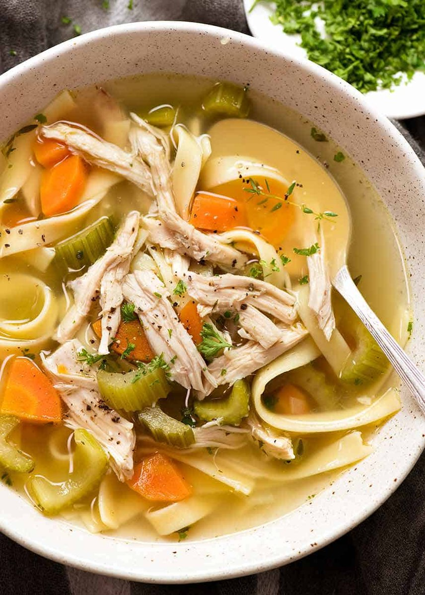

Chicken Noodle Soup
Home

“Chicken Noodle Soup” by Nichijyou123
How to make chicken noodle soup
Chicken noodle soup is a classic comfort food.
Instead of having it out of a can, let's make our own!
Ingredients
- Chopped onion
- Chopped celery
- Sliced carrots
- Egg noodles
- Chicken broth
- Vegetable broth
- Chopped cooked chicken breast
- Dried basil
- Dried oregano
- Salt
- Black pepper
- Butter
Steps
- Melt butter in pot, add onion and celery.
- Add all other ingredients into pot. Stir and combine until brought to a boil.
- Reduce heat and simmer for about 20 minutes.